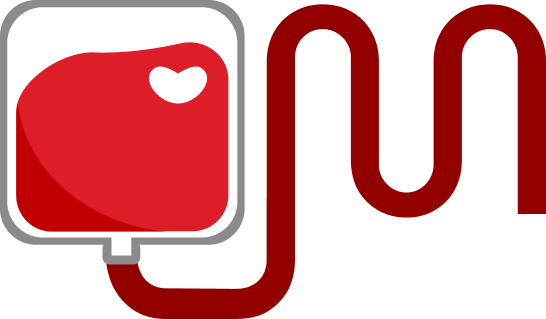
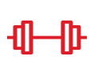

Por que doar sangue?
Um ato simples que pode transformar tudo.
A cada bolsa de sangue doada, até quatro pessoas podem ser beneficiadas. O sangue não pode ser fabricado e depende exclusivamente da solidariedade de quem decide doar.

Doe sangue. Compartilhe esperança.
Faça parte da corrente que transforma vidas todos os dias.
Todo o processo é seguro, controlado e seguindo rigorosos padrões de qualidade.
A doação leva cerca de 30 minutos e pode fazer a diferença na vida de alguém.
Uma única doação pode salvar até 4 vidas.
30 minutos do seu dia podem mudar uma vida inteira.
Por que doar sangue?
A cada bolsa de sangue doada, até quatro pessoas podem ser beneficiadas. O sangue não pode ser fabricado e depende exclusivamente da solidariedade de quem decide doar.

Quem pode doar?
Ter entre
16 e 69 anos
Estar saudável

Pesar mais
de 50 kg
Estar alimentado
Benefícios para quem doa
Além de salvar vidas, a doação traz benefícios para sua saúde física e emocional, fortalecendo o senso de solidariedade e bem-estar.
Ajudar o próximo gera bem-estar e satisfação pessoal.
Antes da doação, são realizados testes que ajudam a monitorar sua saúde.
Seu corpo produz novas células para repor as doadas, estimulando a renovação sanguínea.
Garante um dia de folga no trabalho a cada 12 meses de doação, conforme previsto na legislação brasileira.
Histórias que foram transformadas pela doação
Cada bolsa de sangue pode representar uma nova oportunidade de vida.
Paciente oncológica
“A doação permitiu que eu continuasse meu tratamento.”
Sobrevivente de acidente
“Recebi transfusões durante minha recuperação.”
Tratamento contra câncer
“O sangue doado me ajudou a continuar lutando.”
Juntos salvamos vidas!

A Unimed acredita que promover a saúde também significa incentivar ações que salvam vidas. Por isso, apoia o projeto Sangue Bom na missão de conscientizar a população sobre a importância de doar sangue e alcançar essa causa.

Há mais de seis décadas, a EMS investe em saúde, pesquisa e bem-estar, apoiando projetos que contribuem para uma sociedade mais saudável e solidária.

Maior rede integrada de saúde do Brasil, o Dasa apoia iniciativas que promovem prevenção, qualidade de vida e ações que fortaleçam o impacto social.

Com foco em inovação e excelência na saúde, o Grupo Fleury investe em ações que garantam o cuidado com a vida e a importância da doação.